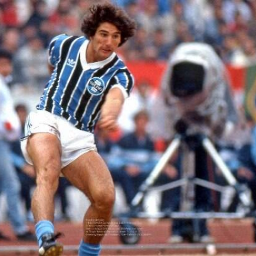
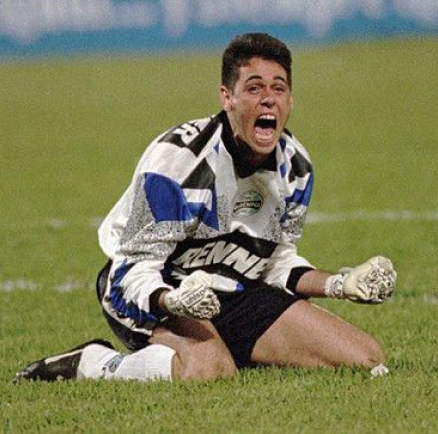
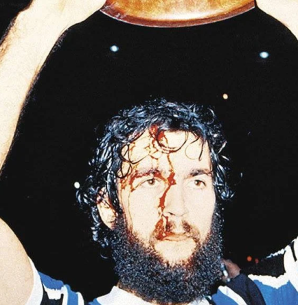
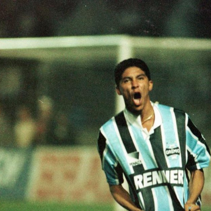

Grêmio
O Grêmio Foot-Ball Porto Alegrense (conhecido apenas por Grêmio e cuja sigla é FBPA) é um clube de futebol brasileiro da cidade de Porto Alegre, no Rio Grande do Sul, fundado em 15 de setembro de 1903 por Candido Dias da Silva. É considerado um dos maiores clubes do Brasil e da América do Sul. Suas cores são azul, preto e branco. O clube tem como alcunhas Imortal Tricolor, Tricolor dos Pampas, Tricolor Gaúcho, Rei de Copas e Clube de Todos.[2] Já foi campeão da Copa Libertadores da América em três ocasiões, o que o torna o clube brasileiro com mais conquistas nesta competição, ao lado dos paulistas Palmeiras, São Paulo e Santos, e vice em duas outras oportunidades.[10] Foi o primeiro clube fora da região Sudeste a conquistar títulos de dimensão continental e mundial, sendo campeão da América e do Mundo em 1983.
Títulos
Campeonato Brasileiro: 2
Copa do Brasil: 5
Campeonato Carioca: 32
Copa Libertadores da América : 3
Mundial: 1
Ídolos
- 
- 
- 
- 
RENATO
“Com dois golaços/De Portaluppi/Grêmio pra sempre campeão mundial!” - O canto eternizado pela torcida dá bem a dimensão do legado de Renato Gaúcho para a história tricolor, sendo o melhor da vitória sobre o Hamburgo, em Tóquio, para dar ao Grêmio sua maior glória aos 21 anos de idade. Antes disso, anotou dois gols na campanha vitoriosa na Libertadores, incluindo um contra o Estudiantes na célebre 'Batalha de La Plata'. Conquistou os tricolores com seu jeito irreverente e bola no pé, levantando ainda dois títulos estaduais. Teve um breve retorno em 1991, e duas passagens como técnico (2010-2011 e 2013), antes de voltar para fazer história como técnico graças ao título sul-americano de 2017!
DANRLEI
"Com quase 600 partidas disputadas pelo clube, Danrlei foi o grande símbolo dos vitoriosos anos 90, sendo o camisa 1 das conquistas da segunda Libertadores, do Brasileiro de 95, três edições da Copa do Brasil, outras cinco do Gauchão, uma Copa Sul e uma Recopa Sul-Americana. Foi um dos grandes goleiros do país em seu auge, e continua tendo grande identificação com o clube mesmo com as gerações mais novas.
HUGO DE LEÓN
O personagem daquela que é, talvez, a foto mais icônica da história gremista é um dos principais representantes da 'garra' que é atribuída à camisa tricolor. Zagueiro de técnica e força, foi o capitão das conquistas da América e do Mundo em 1983, também participando do título brasileiro de 1981. Não teve uma passagem duradoura, mas com certeza uma das mais marcantes da era que colocou o clube gaúcho no topo do planeta.
JARDEL
Emprestado pelo Vasco da Gama, Jardel se tornaria um dos atacantes mais letais, e peça-chave do Grêmio campeão da América em 1995: foram seus doze gols que lideraram o time à conquista continental, sendo quatro deles na série antológica de quartas-de-final contra o poderoso Palmeiras que qualquer torcedor ainda guarda com carinho. Não ficou para ver o Tricolor levantar o bi do Brasileiro no ano seguinte, e levou seu poder de finalização, especialmente no jogo aéreo, para fazer história em Portugal e na Turquia.
Arena do Grêmio
A Arena é o mais moderno complexo multiuso da América Latina. Um espaço perfeito para realizar os mais variados tipos de eventos: culturais, sociais ou esportivos. A tecnologia de ponta, os ambientes sofisticados e uma estrutura inédita no país proporcionam toda a comodidade que você precisa para aproveitar cada acontecimento.
Torcida
Geral do Grêmio é uma torcida barra brava brasileira do Grêmio Foot-Ball Porto Alegrense. Criada em 2001, foi a primeira barra brava do Brasil, é considerada a maior torcida do clube e umas das torcidas mais fanáticas do Brasil.